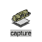
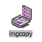
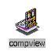
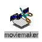
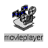
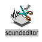
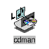
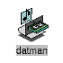

Digital Media Tools er et sett av applikasjoner som lar deg bearbeide bilder, lyd og film/video, og enkelt lar deg skrive ut disse. DigitalMedia Tools består av følgende verktøy :

CaptureCapture er et verktøy som kan benyttes til å ta et bilde, video eller lyd skjelmdump med det digitale kameraet som følger med Indy arbeidsstasjonene. Capture gir deg også mulighet for skjermdump.
ImageWorks kan ta et bildet og bearbeide det og/eller knytte det sammen med andre bilder. ImageWorks kan bearbeide bildene med følgende funksjoner:

ImageCopyImageCopy lar deg kopiere et bilde fra et format til et annet. Du kan kopiere filen til følgende formater :
Se også MovieConvert.
ImageView lar deg åpne et eller fler bilder i et ImageView vindu.

CompViewCompView lar deg åpne et bilde i et CompView vindu samtidig som du ser en JPEG komprimert versjon av bilde i samme vindu. Med en slider kan du sette Q-faktoren til JPEG komprimeringen.

MovieMakerMovieMaker kan benytte bilder til å lage film/video eller du kan editere en eksisterende film/video med den.
Movie Convert er et verktøy som lar deg manipulere med bilder og film/video. Følgende funksjoner støttes :
Følgende film/video formater støttes av MovieConvert :
Følgende bilde formater støttes av MovieConvert :
MovieMaster er et verktøy som bruker MPEG-1 kompresjon og dekompresjon. MPEG (Moving Pictures Experts Group) er den foretrukne standarden for komprimering av film/video og lyd filers for World Wide Web. For konvertering av bilder til GIF formatet, som er den foretrukne standarden av bilder or World Wide Web, se MovieConvert.
·Movie Master is more limited than Movie Convert in the area of image conversion. It only accepts: SGI, TIFF, JFIF, FIT, GIF, and Photo CD image files. If you wish to convert a different image format to the MPEG-1 format, you can first use Movie Convert to convert it to a format accepted by Movie Master.
Noen av konverteringene MovieMaster kan utføre, er :

MoviePlayerMoviePlayer er en VCR-lignende kontrol for avspilling av film/video filer. Standard kontroll funksjoner lar deg spille, stoppe, spoletilbake, hurtig fremspilling m.m.
Et vindu viser den filmrammen som blir spilt, samt et annet viser avspillings tiden.

SoundEditorSoundEditor kan dubbe lyd til et bilde eller en video. Med Sound Editor kan du :
SoundFiler verktøyet lar deg spille lydfiler og konvertere en lydfil til et annet format eller en annen frekvens.
Sound Filer kan konvertere til og i fra disse formatene :
SoundPlayer verktøyet lar deg spille en av de følgende lydfiler :

CD ManagerCD Manager lar deg spille musikk CDer. Du kan raskt hoppe fra et track til et annet, stoppe eller ta en pause i avspillingen eller lage en katalog for hver CD.

DAT ManagerDAT Manager lar deg spille DAT (digital audio tape) taper . Du kan raskt hoppe fra et track til et annet, stoppe eller ta en pause i avspillingen.
Impressario gir deg en rekke verktøy og drivere for utskrift, skanne og se/lese mange bilde/filtyper. For å skrive ut en fil kan du dra filen over skriversymbolet og du vil se når skriveren er ferdig. Impressario inneholder blant annet:
De fleste printerene som Impressario ikke støtter direkte, blir allikevel støttet ved at de emulerer de printerene som Impressario støtter, eller at tredjeparts applikasjoner utvider støtten for andre skrivere/skannere. Merk at de fleste generelle serielle plottere og Postscript skrivere støttes i det medfølgende printersystem i IRIX. Impressario har driver støtte for følgende skrivere/skannere:
Retur til Mindshare Collaborative Software siden.
Oppdatert, 6. juni 1995